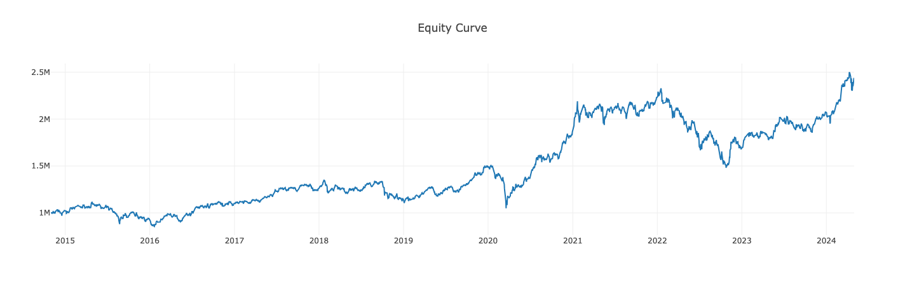
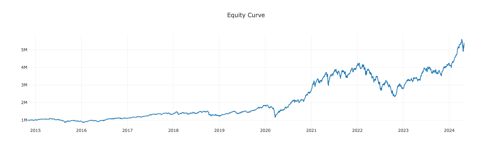
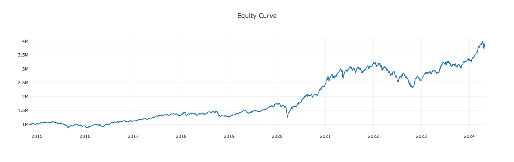

槓桿 ETF 投資法：回測實證 00631L 槓桿投資策略
這項回測實驗是閱讀 《槓桿ETF投資法》 後所得到的靈感啟發。根據實證結果顯示，在相同的曝險比例下，使用 00631L 取代 0050 確實是可行的投資策略，甚至能取得更佳的報酬。

前言
在當今的金融市場中，投資人一直在探索能夠在風險控制上保持謹慎的同時，實現更高報酬的方法。在這個追求利潤與風險平衡的過程中，槓桿型 ETF 已成為一種引人注目的投資方式。作為一種交易型基金，槓桿型 ETF 透過槓桿方式追蹤特定指數、商品或其他金融資產的表現，為投資人提供了實現潛在高回報的機會，同時也伴隨著相應的風險。
對於一般投資人而言，槓桿型 ETF 的特性可能顯得有些複雜，因此需要深入了解其運作原理以及相應的投資策略。本文將以 元大台灣50正二（股票代號：00631L）為例，探討槓桿型 ETF 的特性，包括其運作原理、曝險比例與資金配置以及再平衡策略。同時，我們將與投資原型 ETF 元大台灣50（股票代號：0050）進行比較，透過實戰策略回測，提供具體的量化分析，以幫助投資朋友更好地理解槓桿投資法的運作方式，並選擇適合自己的投資策略。
槓槓型 ETF 的特性
槓桿型 ETF（Leveraged Exchange-Traded Fund）是一種交易型基金，透過運用衍生性金融商品，以槓桿方式追蹤特定指數、商品或其他金融資產的表現。槓桿型 ETF 通常會以「2x」或「3x」的槓桿倍數來追蹤其標的指數，這表示當標的指數上漲（或下跌）1% 時，槓桿型 ETF 的價格可能上漲（或下跌）2% 或 3%。
元大台灣50正二（股票代號：00631L）即是一種槓桿型 ETF，全名為 元大台灣50單日正向兩倍基金（以下簡稱 00631L），目標是追蹤 台灣50指數 每日變動的兩倍報酬。換言之，若台灣50指數在某日上漲 1%，00631L 的預期上漲幅度為 2%；相反地，若指數下跌 1%，00631L 則預期下跌 2%。
00631L 透過持有期貨來實現單日正向兩倍報酬目標。不過，由於 台灣50ETF股票期貨 交易量較小，流動性問題存在（註：台灣50指數期貨 於 111 年 9 月 22 日下市，00631L 轉為持有 台灣50ETF股票期貨），因此 00631L 基金主要持有 臺股期貨，而 台灣50ETF股票期貨 僅占一小部分。換言之，00631L 實際上更與加權指數有較高的相關性。從指數化投資角度來看，買進 00631L 相當於持有全台灣上市股票，比 0050 更具分散投資的效果。
曝險比例與資金配置
曝險比例指的是您願意讓資金承受多少風險。以投資原型 ETF 元大台灣50（股票代號：0050）為例，如果您擁有 100 萬元，並決定投資 100 萬元於 0050，那麼您的曝險比例就是 100%；如果您決定投資 50 萬元於 0050，那麼曝險比例就是 50%。
若將投資標的更換為 00631L，由於其槓桿為 2 倍，您只需投資 25 萬元即可達到 50% 的曝險；投資 50 萬元於 00631L，則可達到 100% 的曝險。
槓桿 ETF 的特性使您能夠將剩餘資金保留為現金或投資於低風險資產。透過這樣的方式，您的總曝險仍為 100 萬元的 100%，但只利用了一半資金投入 00631L，可使資金的運用更加靈活。
再平衡策略
雖然二倍槓桿可透過 50% 的資金達到 100% 的曝險，但隨著時間推移，若股市長期上漲，槓桿 ETF 部位將逐漸擴大。此時，可透過再平衡策略，將資產配置比例調整回原狀。為何需要再平衡？因為當曝險比例過高時，下跌將承受更大虧損風險。在市場上漲時，再平衡增加現金部位以降低曝險；當市場下跌時，再平衡增加股票部位以提高曝險，如此可維持曝險在固定比例。
舉例來說，若初始資產配置為「50:50」，即股票 50%，現金 50%，若資產總值為 100 萬，則股票部位為 50 萬元，現金部位亦為 50 萬元。假如股票部位上漲了 50%，那麼股票市值將達到 75 萬元，此時股票與現金的比例會偏移至「60：40」。此時，賣出 12.5 萬元市值的股票，可使股票部位變為 62.5萬元，現金部位亦為 62.5 萬元，回復至「50:50」的配置比例。
由於資產比例會隨資產價值的波動而偏離，過大的偏離會影響原有的風險容忍度。透過再平衡，可以使資產比例重新回歸平衡點，並在高點調節，低點買進，以維持曝險在設定的範圍內。
實戰策略回測
現在，我們將以實際回測來驗證槓桿 ETF 投資策略。由於 00631L 於 2014 年 10 月 31 日上市，我們選擇回測時間範圍為該日至 2024 年 4 月 30 日的前一個交易日，比較以 100 萬元投資 0050、使用 00631L 進行 50:50 配置、以及再平衡投資策略的效果。
| 策略 | 0050（100％ 曝險） | 00631L（50：50 配置法） | 00631L（50：50 再平衡） |
|---|---|---|---|
| 最終資產 | 2431765.5 | 5388529.6 | 3927645.63 |
| 最高資產 | 2499908.35 | 5606347.2 | 4013067.23 |
| 報酬率（％） | 143.17655 | 438.85296 | 292.764563 |
| 年化回報率（％） | 10.142581 | 20.094013 | 16.035464 |
| 年化波動率（％） | 19.109634 | 28.780601 | 19.406987 |
| 夏普比率 | 0.530757 | 0.698179 | 0.826273 |
| 索提諾比率 | 0.847158 | 1.20707 | 1.383176 |
| 最大回撤率（％） | -36.380624 | -45.280075 | -29.190246 |
| 平均回撤率（％） | -3.485896 | -3.338422 | -2.482711 |
| 最大回撤期間（天） | 780 | 738 | 543 |
| 平均回撤期間（天） | 55 | 30 | 28 |
| 交易次數 | 1 | 1 | 13 |
這份回測結果提供了對三種不同投資策略的詳細比較，讓我們從量化分析的角度來說明每個策略的表現。
請注意，為了便於回測實作，我們未考慮交易手續費和 0050 的含息報酬。在相同的回測期間，台灣50報酬指數 的報酬率為 244.846112%。如果將 0050 收到的股息全部再投資，並假設沒有追蹤誤差，實際報酬率應會接近這個數字。
策略一：以 100％ 曝險投資 0050

- 報酬率較低：以 100％ 曝險投資 0050 的報酬率為 143.18％，相對於其他兩種策略來說是最低的。
- 波動性較小：年化波動率為 19.11％，比其他兩個策略低。
- 夏普比率低：夏普比率為 0.53，這表示每承受一單位的風險，僅獲得 0.53 個單位的報酬。
- 最大回撤高：最大回撤為 -36.38％，這表示投資組合的最大損失可能達到 36.38％。
- 交易次數少：只進行了 1 次交易。
策略二：使用 50：50 配置法投資 00631L

- 報酬率最高：使用 50：50 配置法投資 00631L 的報酬率為 438.85％，是三個策略中最高的。
- 波動性最大：年化波動率為 28.78％，相對較高，但也帶來了更高的報酬。
- 夏普比率較高：夏普比率為 0.70，較第一策略高，表示每單位風險可獲得較高的報酬。
- 最大回撤最大：最大回撤為 -45.28％，風險較高，但整體效果仍然比其他策略好。
- 交易次數少：僅有 1 筆交易，與策略一相同，但風險與報酬更高。
策略三：使用 50：50 再平衡投資 00631L

- 報酬率居中：使用 50：50 再平衡投資 00631L 的報酬率為 292.76％，較第二策略低但仍然高於第一策略。
- 波動性居中：年化波動率為 19.41％，相對較低，表現穩健。
- 夏普比率高：夏普比率為 0.83，優於前兩個策略，顯示在風險調整後的報酬較佳。
- 最大回撤較低：最大回撤為 -29.19％，相對於前兩個策略較低。
- 交易次數較多：因為有再平衡操作，進行了 13 次交易，但也可能增加了交易成本。
從量化分析的角度來看，我們可以得出以下結論：
- 使用 50：50 配置法投資 00631L 的策略在報酬率上表現最佳，但伴隨著較高的波動性和最大回撤。
- 使用 50：50 再平衡投資 00631L 的策略在風險調整後的報酬表現較為穩健，夏普比率較高。
- 以 100％ 曝險投資 0050 的策略雖然波動較低，但報酬率也相對最低。
結語
本文探討了槓桿型 ETF 的特性、曝險比例與資金配置以及再平衡策略，並透過實戰策略回測提供了實證分析，以期幫助投資朋友更深入理解槓桿投資的運作原理與投資策略的效果。
根據實證結果顯示，在相同的曝險比例下，使用 00631L 取代 0050 確實是可行的投資策略，甚至能取得更佳的報酬。然而，我們必須謹記，回測結果僅供參考，過去之績效不代表未來績效之保證。此外，不同指數的槓桿型 ETF 商品可能帶來不同的結果，建議投資朋友在採取任何投資策略之前，應詳細評估自身的風險承受能力、投資目標和時間規劃，並謹慎考慮投資槓桿型 ETF 可能帶來的報酬和風險。
最後，隨文附上以 Node.js 撰寫的回測程式 原始碼。